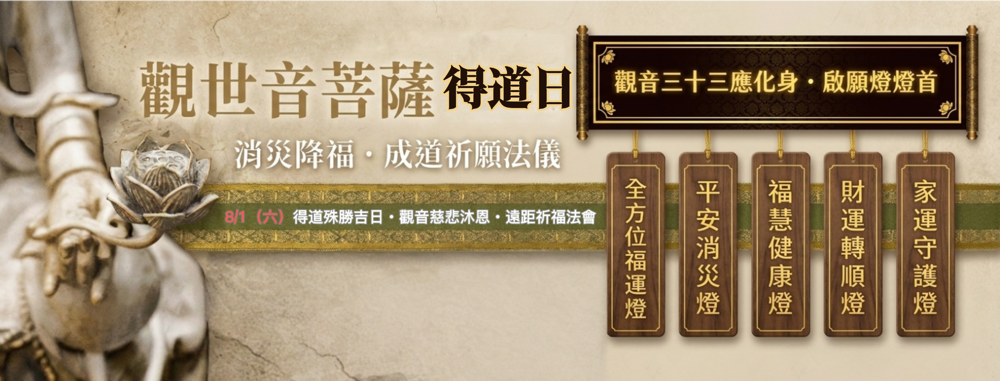
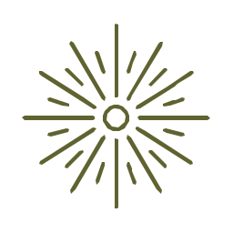
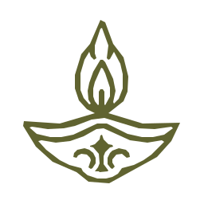
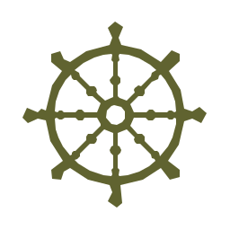
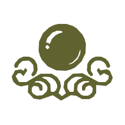
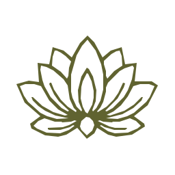

觀世音菩薩得道日
消災降福・成道祈願法儀
六月十九殊勝吉日，以觀音慈悲願力，為修行、身心、家宅與諸事祈願轉順。

【觀音三十三應化身・啟願燈燈首】
仰承觀世音菩薩三十三應化身慈悲願力，照見眾生心中迷霧，令紛亂歸於安定，令障礙轉為因緣。願每一念善心皆有所感，每一分願力皆有所應；於慈悲中增長智慧，於智慧中圓滿福德，讓生命一步步回到光明與自在。
此燈的特殊性
此非單為求順，而是以觀音隨類化現的慈悲願力，為眾生在困局中開一道光。凡心緒紛亂、運勢受阻、修行卡關、家宅不寧者，皆可藉此燈，將願心安放於菩薩之前。
疏文所啟，請如實寫下自己修行上遇到的困難與瓶頸，例如：被靈擾纏身、心性不定、修行受阻，或其他各種困擾。
要誠心誠意地寫出來，祈請觀音菩薩慈悲垂鑒、護念加持，指引你走出迷津，早日突破關卡，逐步進入圓滿的境界。
＊疏文僅代為宣讀啟秉，祈願菩薩指引，無提供實體疑惑回覆。
願菩薩光明遍照，令一切障緣化散，善願漸成，福慧圓滿。

全方位福運燈身、心、財、緣、事業，全面交付菩薩護持。
人生的困境，往往不是只有一個地方出了問題，而是身心、家庭、人際、財務與事業彼此牽動，形成整體失衡。當諸事膠著、方向迷惘、運勢停滯、努力卻始終無法突破時，誠心供奉全方位福運燈，祈請觀世音菩薩以慈悲願力護持，為生命重新梳理因緣、調和福報、開啟善緣，使身安、心定、事順、福聚，令人生重新步入光明與圓滿。
適合祈請：
人生卡關、運勢低迷、事事不順、希望整體提升福報與運勢者。

平安消災燈願菩薩慈光遍照，消災解厄，護佑平安。
人生無常，災厄往往來自看不見的因緣。若流年不利、諸事多阻、身體反覆不適、出入不安、睡眠不寧、惡夢頻仍，皆可虔誠點燃平安消災燈，祈請觀世音菩薩以大悲願力照破黑暗、化解障礙，令災厄遠離、身心安穩、行車出入平安，增長吉祥福德，使生命少一分驚恐，多一分安定。
適合祈請：
流年犯煞、健康反覆、經常出差旅行、家人平安、希望消災解厄者。

福慧健康燈身體安康，智慧增長，福慧雙修。
身體，是修行的道場，也是承載生命使命的重要器皿；智慧，則是照見人生方向的明燈。點燃福慧健康燈，不僅祈願身體康健、疾病遠離，更祈請觀世音菩薩加持福德增長、智慧開顯，使身心安定、念念清明，在修行、學業、工作與人生道路上，都能以健康之身承載福報，以智慧之心面對人生。
適合祈請：
自己或家人健康、長輩、慢性疾病調養、修行者、考生及需要增長智慧者。

財運轉順燈財流順行，福德相隨，善緣廣聚。
財富，不只是金錢，更是福報流動的顯現。當財路受阻、收入停滯、事業不順、投資受挫、努力難有回報時，可虔誠供奉財運轉順燈，祈請觀世音菩薩以慈悲願力調和因緣、廣開善門，引導正財穩定、偏財有度、事業順遂、人脈聚合，使福德轉化為財富，財富再成為利益眾生的力量。
適合祈請：
創業者、自營業、業務工作、投資理財、求職轉職、希望改善財運者。

家運守護燈一家平安，同沐慈光，共享福德。
一個家庭，是眾多因緣與業力共同交會之處。當家中容易爭執、親子失和、夫妻衝突、長輩健康不安、家運起伏不定時，可為全家供奉家運守護燈，祈請觀世音菩薩慈光護佑一家大小，化解口舌紛爭、安定家宅磁場、增進彼此和合，使家庭充滿理解、平安與福氣，共同走向和樂圓滿。
適合祈請：
全家祈福、夫妻和合、親子關係、長輩平安、家宅安寧、提升家運者。
報名法儀表單
第一手掌握法會訊息
STAY CONNECTED如欲第一手收到靈元院最新課程與未公開活動訊息，敬請加入官方頻道。
法務、課程、合作諮詢，敬請通過聯繫帳號洽詢。